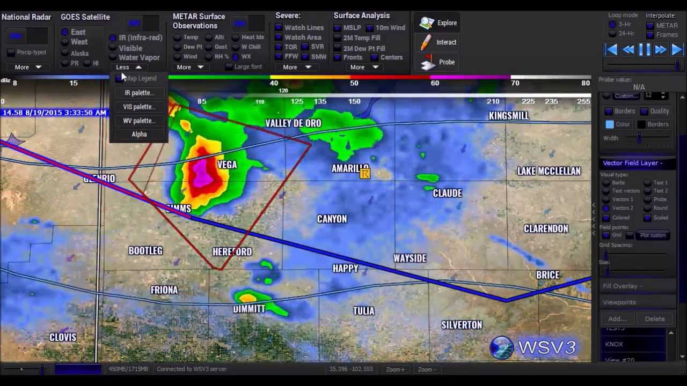
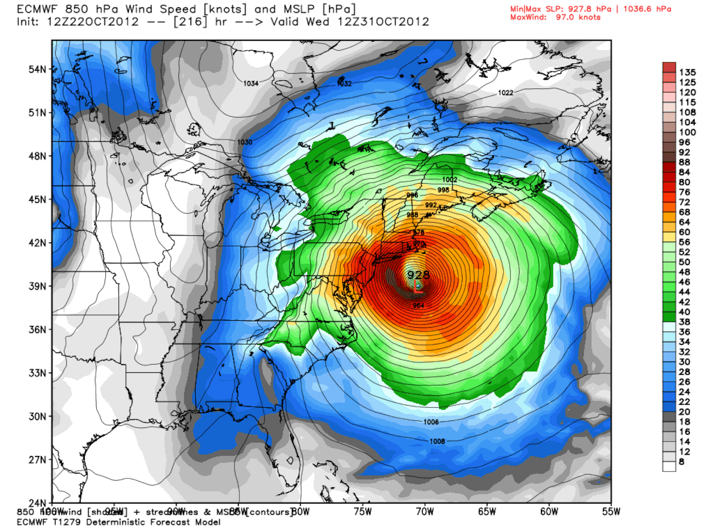

Computer science is essential in meteorology for analyzing vast data sets,
running complex simulations, and creating weather and climate models.
This involves using high-performance computing (supercomputers) for numerical
weather prediction, programming for data analysis and visualization (often with
languages like Python), and applying machine learning techniques to improve forecast
accuracy and understand weather systems. Computer scientists can find roles in
organizations like the Met Office and the European Centre for Medium-Range Weather
Forecasts (ECMWF).

Key applications of computer science in meteorology:
Numerical Weather Prediction (NWP):
This is a core application that relies heavily on supercomputers to process massive amounts of data and run complex atmospheric models.
Data analysis and visualization:
Programming is crucial for processing raw data from sources like satellites and weather stations, and for creating visual representations of weather patterns.
Climate modeling:
Computer models are used for long-term climate predictions and to understand the effects of climate change.
Machine learning and AI:
Artificial intelligence is being used to enhance weather models by finding patterns that are difficult for humans to detect, leading to more accurate forecasts.
Software development:
There is a need for software engineers to create and maintain the complex systems used for weather forecasting and research.